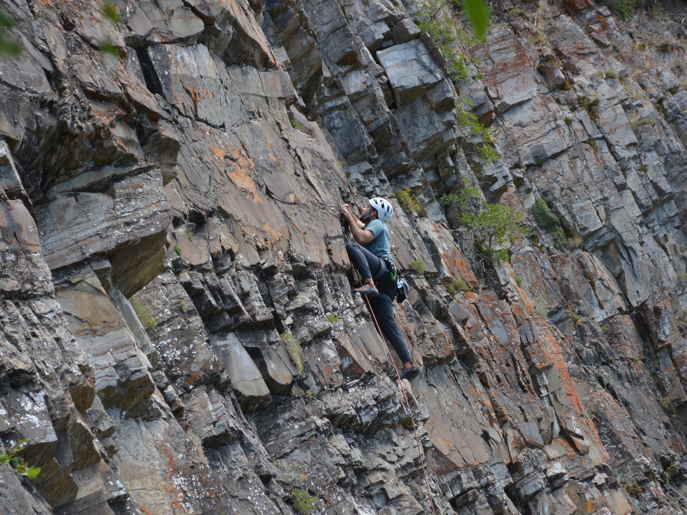
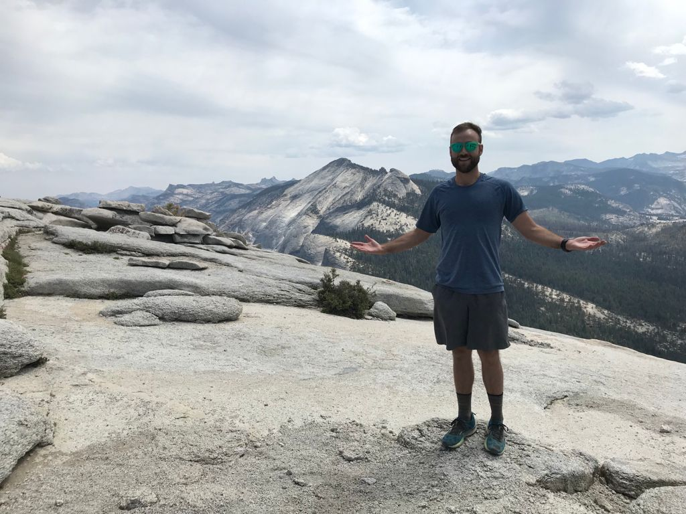
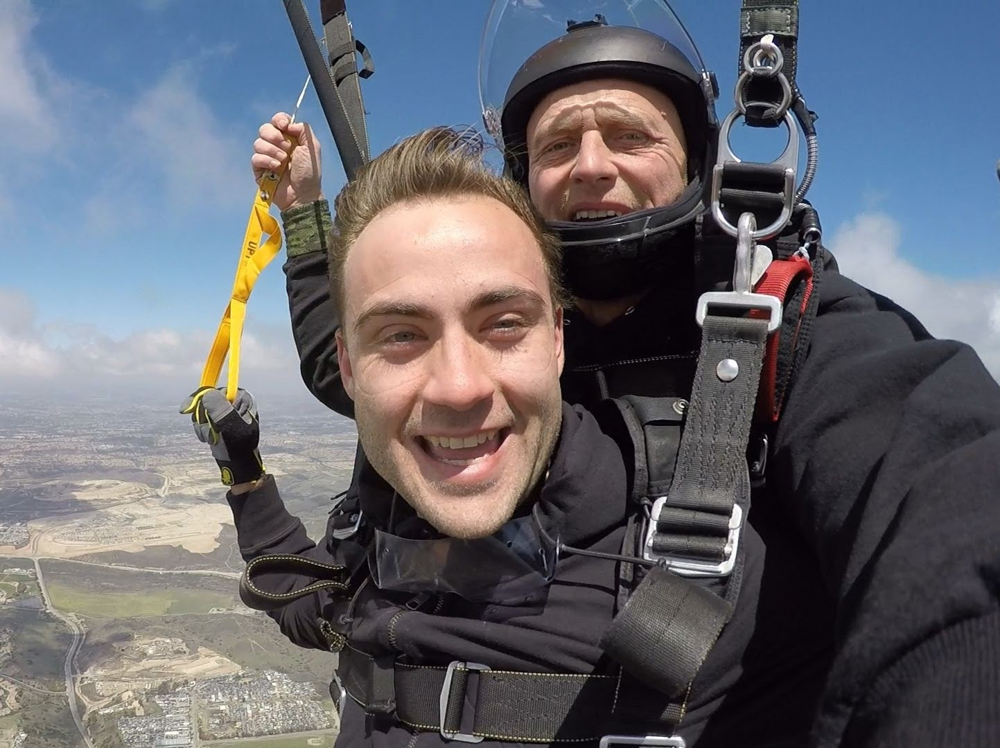

- Hi, I'm Alex. Check out what I've worked on by clicking on the bar above.
-
Below are some photos of me outside, my favorite place to be. -



-
PhD Candidate in Computer Science at the USC Viterbi School of Engineering
5th year, currently working with HUMANS lab and the Annenberg Game LabI study ways to increase pro-social behavior and collaboration in multiplayer online games.
-
MS in Computing at the Univeristy of Utah
Data Management and Analytics trackCompleted project Construction and Analysis of Skill Modeling Frameworks in EsportsQED lab alunmi
-
Data Science Intern at EA
Bot detection in Apex Legends
-
Data Science Intern at Riot Games
Cross-product player engagement prediction.
-
Data Science Intern at Activision Blizzard
Cheat detecion in Call of Duty: Warzone.
- [ publications ]
- “The Gift That Keeps on Giving: Generosity is Contagious in Multiplayer Online Games” CSCW 2022
- “GCN-WP -- Semi-Supervised Graph Convolutional Networks for Win Prediction in Esports” IEEE CoG 2022
- “SCOPE: Selective Cross-validation Over Parameters for Elo” AIIDE 2019
- [ unpublished ]
- League of Legends (LoL) Rift Rivals 2018 strategy breakdown
- LoL win rate based on game time
- LoL esports player communication type and frequency
[ school ]
[ work ]
- [ school ]
- BS in Bioengineering at Rice University
Graduated with Distinction in Research and Creative WorkWorked closely with Dr. Amina QutubWinner of DREAM 8 and the Bioinformatics Peer PrizeReceived the CPRTP fellowship
- [ work ]
-
Co-founder of DiBS
Data visualization and analytics startup
- [ selected publications ]
- “Inferring causal molecular networks: empirical assessment through a community-based effort”. Nature Methods.
- “A Crowdsourcing Approach to Developing and Assessing Prediction Algorithms for AML Prognosis” PLOS Computational Biology.
- [ press ] DiBS’s BioWheel Aims to Paint a Dynamic Picture of Life Sciences Data
- [ jobs ]
-
Data Science Intern at Zillow Group
Dataset assembly with Presto, SQLBuilt random forest model to predict home transactions
-
Data Scientist at Harvest Exchange
Data extraction and storage with SQLData ingestion and transformation with Python
- [ talks ]
-
The Sky is Falling
Some data science lessons I've learned, presented at DSSS 2018
- [ writing ]
- Harvest Data Roundup
What are people reading and writing on Harvest Exchange?
- Why all cities need an event like Denver Startup Week
- Campus newspaper
Some articles I wrote for the Rice Thresher